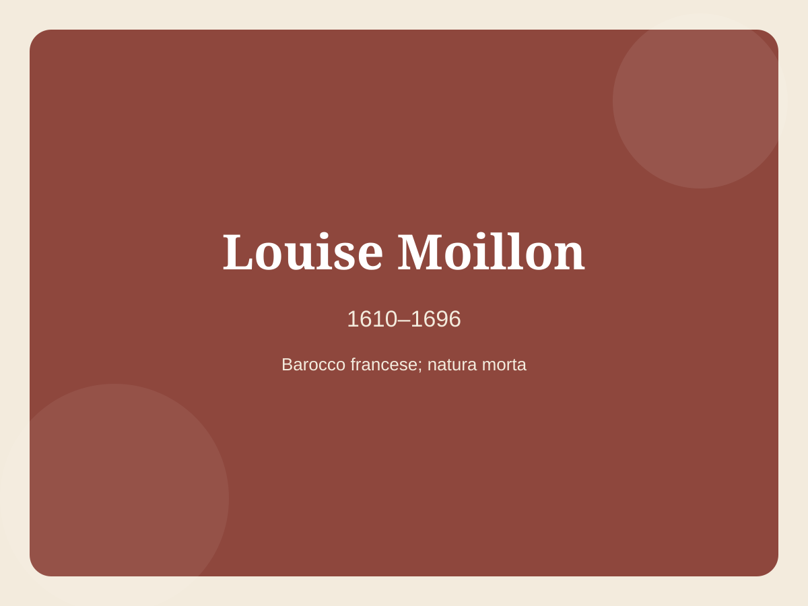
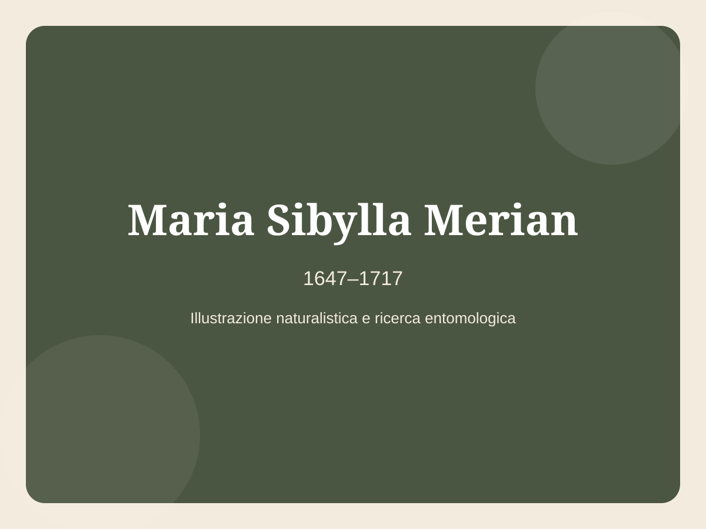
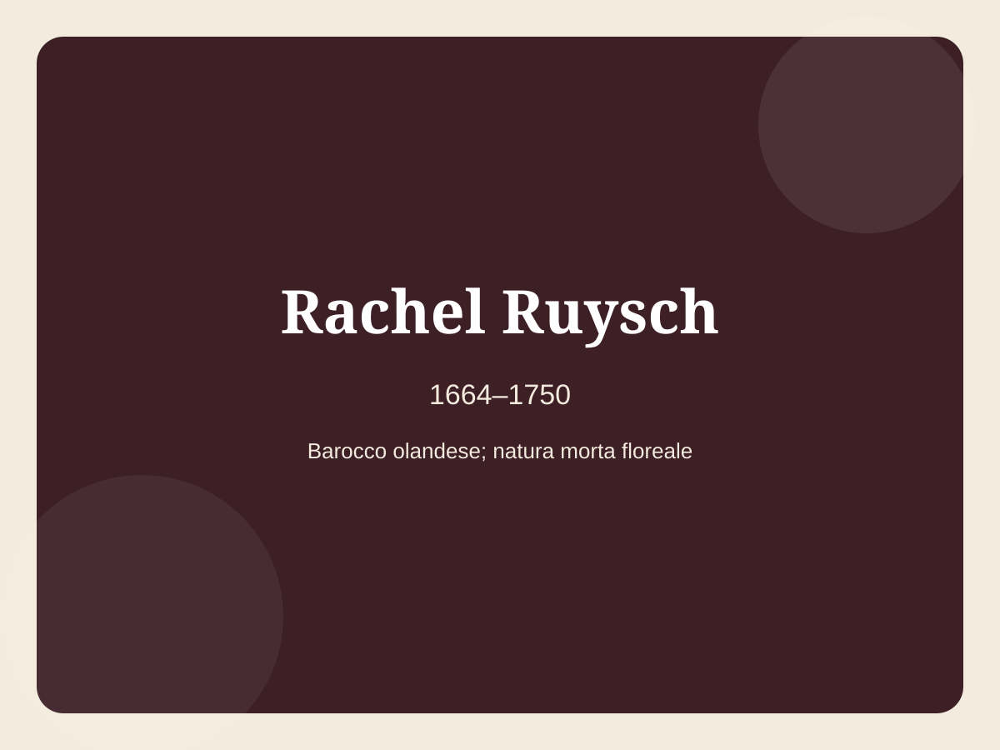

1604–1689
Michaelina Wautier
Pittrice barocca fiamminga, autrice di ritratti e ambiziose scene storiche e mitologiche.
Apri la schedaNel Seicento le artiste si confrontarono con Barocco, ritratto, natura morta, scultura e illustrazione scientifica.
1604–1689
Pittrice barocca fiamminga, autrice di ritratti e ambiziose scene storiche e mitologiche.
Apri la scheda
1609–1660
Pittrice del Secolo d’oro olandese, maestra di scene di genere e ritratti vivaci.
Apri la scheda
1610–1696
Pittrice francese specializzata in raffinate nature morte di frutta.
Apri la scheda
1616–1705
Pittrice e architetta romana del Seicento, figura eccezionale per la sua epoca.
Apri la scheda
1633–1699
Ritrattista inglese, tra le prime artiste professioniste in Inghilterra.
Apri la scheda1638–1665
Pittrice bolognese barocca, fondò una scuola frequentata anche da donne.
Apri la scheda
1647–1717
Naturalista e illustratrice, pioniera dello studio visivo della metamorfosi degli insetti.
Apri la scheda
1664–1750
Grande maestra della natura morta floreale tra Seicento e Settecento.
Apri la scheda
1687–1738
Pittrice fiorentina di soggetti naturalistici e floreali, attiva nel Settecento.
Apri la scheda